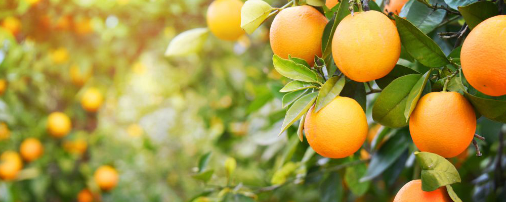

Oranges Incorporated
Orange you glad?
The orange is the fruit of various citrusspecies in the family Rutaceae (see list of plants known as orange); it primarily refers to Citrus × sinensis, native to China. It is also called sweet orange, to distinguish it from the related Citrus × aurantium, referred to as bitter orange. The sweet orange reproduces asexually (apomixis through nucellar embryony); varieties of sweet orange arise through mutations. The orange is a hybrid between pomelo(Citrus maxima) and mandarin (Citrus reticulata). The chloroplast genome, and therefore the maternal line, is that of pomelo. The sweet orange has had its full genome sequenced.
The orange originated in Ancient China and the earliest mention of the sweet orange was in Chinese literature in 314 BC. As of 1987, orange trees were found to be the most cultivated fruit tree in the world. Orange trees are widely grown in tropical and subtropical climates for their sweet fruit. The fruit of the orange tree can be eaten fresh, or processed for its juice or fragrant peel. As of 2012, sweet oranges accounted for approximately 70% of citrus production. In 2017, 73 million tonnes of oranges were grown worldwide, with Brazil producing 24% of the world total, followed by China and India.
All citrus trees belong to the single genus Citrus and remain almost entirely interfertile. This includes grapefruits, lemons, limes, oranges, and various other types and hybrids. As the interfertility of oranges and other citrus has produced numerous hybrids and cultivars, and bud mutations have also been selected, citrus taxonomy is fairly controversial, confusing or inconsistent. The fruit of any citrus tree is considered a hesperidium, a kind of modified berry; it is covered by a rind originated by a rugged thickening of the ovary wall.
Different names have been given to the many varieties of the species. Orange applies primarily to the sweet orange – Citrus sinensis (L.) Osbeck. The orange tree is an evergreen, flowering tree, with an average height of 9 to 10 m (30 to 33 ft), although some very old specimens can reach 15 m (49 ft). Its oval leaves, alternately arranged, are 4 to 10 cm (1.6 to 3.9 in) long and have crenulate margins. Sweet oranges grow in a range of different sizes, and shapes varying from spherical to oblong. Inside and attached to the rind is a porous white tissue, the white, bitter mesocarp or albedo (pith). The orange contains a number of distinct carpels(segments) inside, typically about ten, each delimited by a membrane, and containing many juice-filled vesicles and usually a few seeds (pips). When unripe, the fruit is green. The grainy irregular rind of the ripe fruit can range from bright orange to yellow-orange, but frequently retains green patches or, under warm climate conditions, remains entirely green. Like all other citrus fruits, the sweet orange is non-climacteric. The Citrus sinensis group is subdivided into four classes with distinct characteristics: common oranges, blood or pigmented oranges, navel oranges, and acidless oranges.